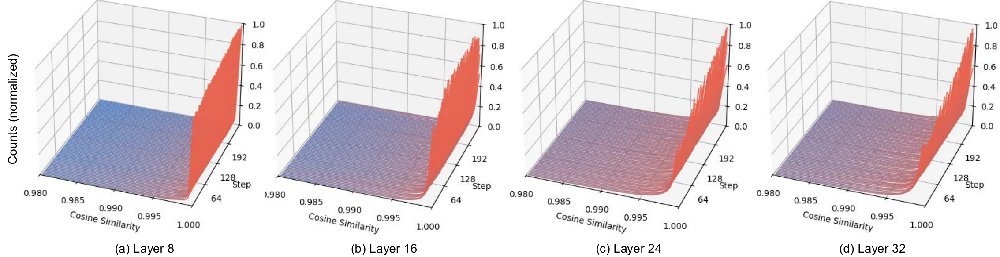
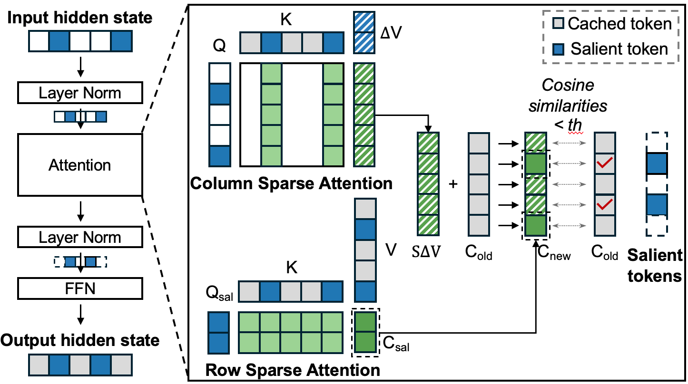
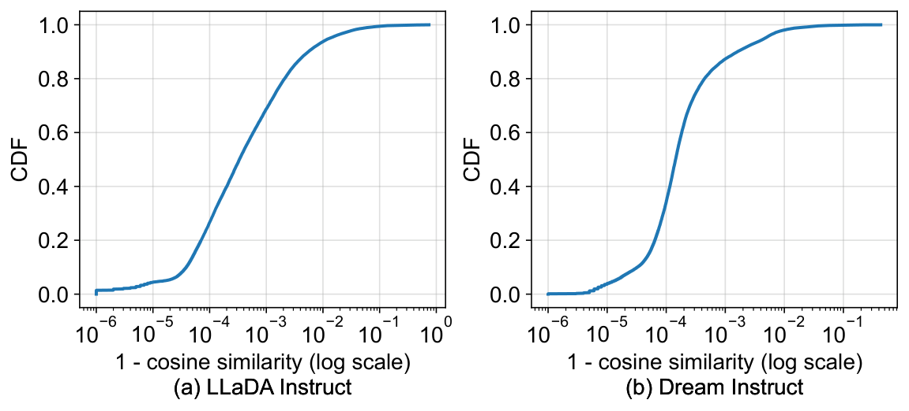
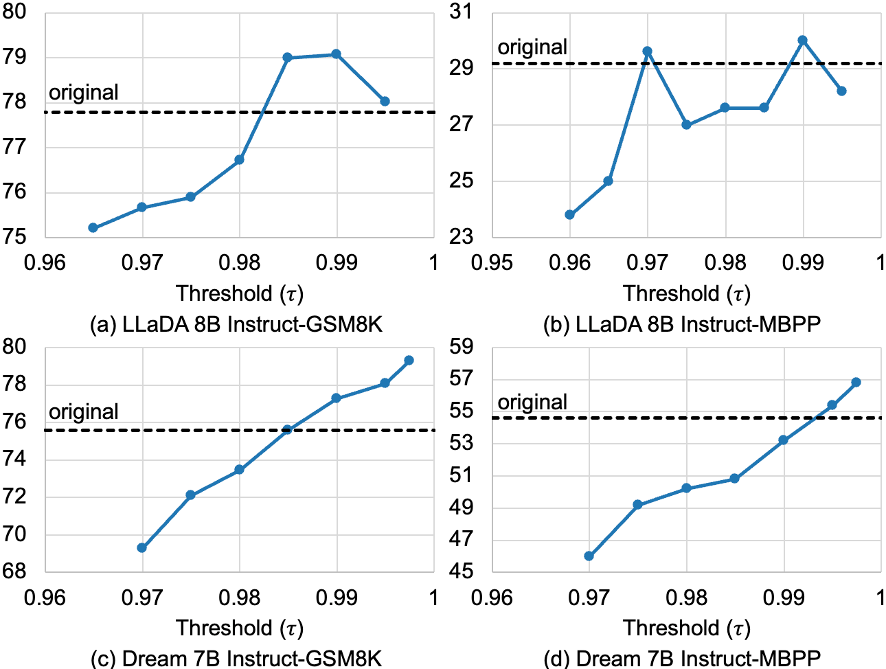
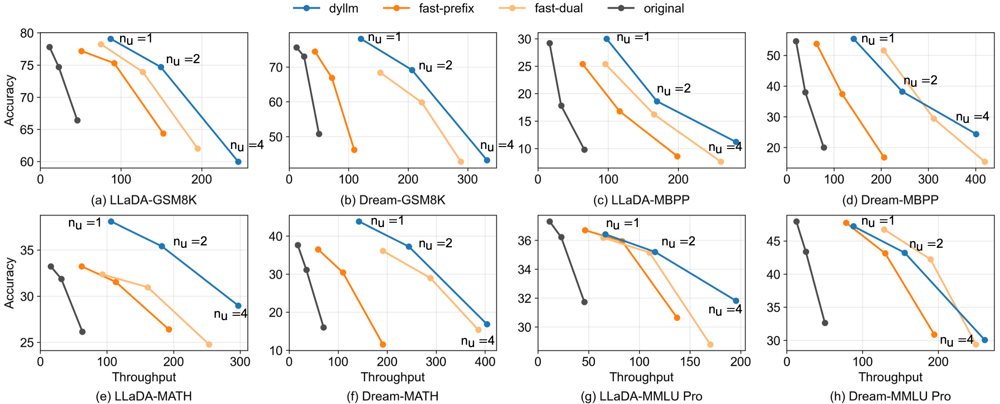

Overview
Masked Diffusion Language Models (MDLMs) enable parallel token decoding, a promising alternative to slow sequential autoregressive generation, but suffer from prohibitive per-step computational overhead: they reprocess the entire sequence at every denoising iteration, leading to repeated prefill-like operations that offset the benefits of parallelism. The figure below illustrates this bottleneck:

The key insight of this work is that most token representations remain stable across diffusion steps, with only a small subset of salient tokens undergoing meaningful changes that contribute to generation quality. We present DyLLM, a training-free inference framework that identifies salient tokens via cosine similarity of attention contexts between adjacent steps, skips redundant computation for non-salient tokens, and uses saliency-aware approximate attention to further reduce overhead. DyLLM achieves up to 9.6x higher throughput across reasoning and code generation benchmarks while largely preserving or even improving baseline accuracy for state-of-the-art MDLMs including LLaDA and Dream.
Key Contributions
- Layer-Adaptive Saliency Mechanism: A dynamic, layer-wise token selection policy that identifies salient tokens using cosine similarity of attention contexts between consecutive denoising steps, enabling skipping of redundant feed-forward network (FFN) computation for stable tokens with negligible error.
- Saliency-Aware Approximate Attention: A novel attention optimization that decomposes context updates to avoid full sequence recomputation, reducing attention complexity from $O(N^2d)$ to $O(N\cdot|\mathcal{A}|d)$ where $|\mathcal{A}|$ is the small number of salient tokens per step.
- Scalable, training-free inference: The framework requires no model retraining, scales robustly with increasing parallel decoding degrees, and outperforms existing MDLM acceleration baselines (Fast-dLLM, dLLM-Cache) with up to 7.6x throughput gain for LLaDA 8B and 9.6x for Dream 7B while largely preserving generation accuracy.
Method
Temporal Sparsity Observation
We first quantify the stability of internal MDLM representations using temporal cosine similarity, defined as:
$$s_{t,l}^{(i)} = \frac{C_{t,l}^{(i)} \cdot C_{t-1,l}^{(i)}}{\|C_{t,l}^{(i)}\| \|C_{t-1,l}^{(i)}\|}$$ where $C_{t,l}^{(i)}$ is the attention context vector for token $i$ at layer $l$ and diffusion step $t$. Values near 1 indicate nearly identical context vectors between consecutive steps. The figure below shows the distribution of this metric across layers:

Most tokens have similarity values near 1, especially in early layers, confirming the existence of strong temporal sparsity in MDLM representations. ### Salient Token Selection We formally define salient tokens as follows: > We define salient tokens at step $t$ and layer $l$ as a set of indices $\mathcal{A}_{t,l} = \{ i \mid s_{t,l}^{(i)} \le \tau \}$, where $\tau$ is a selection threshold. During timestep $t$, for non-salient tokens ($i \notin \mathcal{A}_{t,l}$), we skip the subsequent FFN computation and reuse the previous state from the KV cache, while only salient tokens undergo full re-computation. Two propositions validate this selection policy: 1. Scale Invariance under Linear Projection: $$\text{RMSNorm}((\alpha C) W_o) = \text{RMSNorm}(C W_o)$$ where $\alpha$ is a positive scaling factor and $W_o$ is the attention output projection matrix. This proves that only the direction of the context vector (not its magnitude) affects the input to the FFN, validating cosine similarity as an appropriate saliency metric. 2. Error Bound via Directional Alignment: $$\delta \;\le\; \kappa(W_o)\sqrt{2(1 - s_{t,l})}$$ where $\delta = \|\mathrm{RMSNorm}(C_{t,l} W_o) - \mathrm{RMSNorm}(C_{t-1,l} W_o)\|_2$ is the approximation error from reusing cached FFN output, and $\kappa(W_o)$ is the condition number of $W_o$. This shows that when $s_{t,l} \approx 1$, the error is negligible, justifying skipping computation for non-salient tokens. The overall DyLLM inference pipeline is shown below: ### Saliency-Aware Approximate Attention To further reduce attention overhead, we decompose the change in attention context between steps as: $$
### Saliency-Aware Approximate Attention To further reduce attention overhead, we decompose the change in attention context between steps as: $$
\begin{aligned}
\Delta C_{t,l} &=(S_{t-1, l} + \Delta S)(V_{t-1,l}+\Delta V) - S_{t-1, l}V_{t-1, l} \\
&= (S_{t-1, l} + \Delta S)\Delta V + (\Delta S)V_{t-1,l}
\end{aligned}
$$
where $\Delta S$ is the change in attention scores and $\Delta V$ is the change in value vectors between steps. We use a dual-path update strategy:
For tokens $i \in \mathcal{A}_{t-1,l}$, the representation undergoes a significant transition. We therefore fully recompute the $i$-th row of the attention score matrix $S_{t,l}$, allowing salient tokens to dynamically update their attention patterns. For tokens $i \notin \mathcal{A}_{t-1,l}$, the query remains approximately stationary, implying $\Delta S_{t,l}^{(i,\cdot)} \approx \mathbf{0}$. Accordingly, the update simplifies to $\Delta C_{t,l}^{(i)} \approx S_{t,l}^{(i,\cdot)} \Delta V_{t,l}$.
This optimization is visualized below:

The number of salient tokens per layer is consistently a small fraction of the full sequence length, as shown below:

The approximate attention introduces negligible error, as shown by the CDF of cosine similarity between approximate and exact attention outputs:

An additional response-only optimization processes static prompt tokens only periodically (every 4 steps) rather than every step, as salient tokens are almost exclusively concentrated in the dynamic response sequence.
The impact of the saliency-based optimizations on accuracy is shown in the table below:
Table 1: Impact of Saliency-based FFN and Approximate Attention on Accuracy
| Benchmark | Model | Threshold | Original | Salient FFN Only | Salient FFN + Approx Attention |
|---|---|---|---|---|---|
| GSM8K | LLaDA | 0.995 | 77.79 | 78.09 | 78.01 |
| GSM8K | LLaDA | 0.99 | 77.79 | 78.85 | 79.08 |
| GSM8K | LLaDA | 0.985 | 77.79 | 78.62 | 79.00 |
| GSM8K | Dream | 0.9975 | 75.59 | 79.98 | 79.30 |
| GSM8K | Dream | 0.995 | 75.59 | 79.98 | 78.09 |
| GSM8K | Dream | 0.99 | 75.59 | 78.70 | 76.04 |
| MBPP | LLaDA | 0.995 | 29.20 | 26.00 | 28.20 |
| MBPP | LLaDA | 0.99 | 29.20 | 28.00 | 30.00 |
| MBPP | LLaDA | 0.985 | 29.20 | 27.60 | 27.60 |
| MBPP | Dream | 0.9975 | 54.60 | 56.00 | 56.80 |
| MBPP | Dream | 0.995 | 54.60 | 56.00 | 55.40 |
| MBPP | Dream | 0.99 | 54.60 | 55.20 | 53.20 |
The optimizations preserve or even improve accuracy in most cases, as they suppress noise from low-relevance attention tokens.
Experiments
All experiments run on a single NVIDIA H100 PCIe 80GB GPU, testing LLaDA 8B and Dream 7B instruct models against baselines: original implementation, Fast-dLLM (Prefix and Dual variants), dLLM-Cache. Benchmarks include mathematical reasoning (GSM8K, MATH), general knowledge (MMLU-pro), and code generation (MBPP). Throughput is measured as average tokens generated per second.
Table 2: Main Accuracy and Throughput Results (n_u=1)
| Model | Method | GSM8K Acc | GSM8K Throughput (speedup) | MBPP Acc | MBPP Throughput (speedup) | MATH Acc | MATH Throughput (speedup) | MMLU-pro Acc | MMLU-pro Throughput (speedup) |
|---|---|---|---|---|---|---|---|---|---|
| LLaDA 8B | Original | 77.79 | 11.47 (1.0x) | 29.20 | 33.11 (1.0x) | 33.22 | 15.81 (1.0x) | 37.31 | 11.46 (1.0x) |
| LLaDA 8B | DyLLM (τ=0.995) | 78.01 | 80.15 (6.99x) | 28.20 | 151.27 (4.57x) | 38.68 | 96.98 (6.13x) | 37.06 | 60.16 (5.25x) |
| LLaDA 8B | DyLLM (τ=0.99) | 79.08 | 87.21 (7.60x) | 30.00 | 169.62 (5.12x) | 38.08 | 106.06 (6.71x) | 36.42 | 66.44 (5.80x) |
| LLaDA 8B | Fast-Prefix | 77.18 | 51.05 (4.45x) | 25.40 | 116.27 (3.51x) | 33.22 | 62.12 (3.93x) | 36.70 | 46.45 (4.05x) |
| LLaDA 8B | Fast-Dual | 78.24 | 75.24 (6.56x) | 25.40 | 165.44 (5.00x) | 32.36 | 93.26 (5.90x) | 36.18 | 64.62 (5.64x) |
| LLaDA 8B | dLLM-Cache | 77.18 | 36.77 (3.21x) | 29.00 | 93.04 (2.81x) | 24.70 | 36.56 (2.31x) | 37.90 | 31.56 (2.75x) |
| Dream 7B | Original | 75.59 | 12.57 (1.0x) | 54.60 | 19.62 (1.0x) | 37.60 | 17.64 (1.0x) | 47.94 | 12.60 (1.0x) |
| Dream 7B | DyLLM (τ=0.9975) | 79.30 | 111.79 (8.89x) | 56.80 | 139.62 (7.12x) | 45.12 | 130.57 (7.40x) | 47.45 | 83.10 (6.60x) |
| Dream 7B | DyLLM (τ=0.995) | 78.09 | 120.62 (9.60x) | 55.40 | 141.56 (7.22x) | 43.80 | 142.34 (8.07x) | 47.21 | 87.98 (6.98x) |
| Dream 7B | Fast-Prefix | 74.45 | 43.32 (3.45x) | 53.80 | 62.96 (3.21x) | 36.48 | 59.16 (3.35x) | 47.74 | 78.23 (6.21x) |
| Dream 7B | Fast-Dual | 68.39 | 153.21 (12.19x) | 51.60 | 205.40 (10.47x) | 36.06 | 191.56 (10.86x) | 46.73 | 128.52 (10.20x) |
| Dream 7B | dLLM-Cache | 72.40 | 46.19 (3.67x) | 52.80 | 61.06 (3.11x) | 44.98 | 48.76 (2.76x) | 49.30 | 27.19 (2.16x) |
DyLLM outperforms all baselines in accuracy-throughput tradeoff, achieving the highest throughput for equivalent or better accuracy than the original model. While Fast-Dual achieves higher raw throughput, it suffers from significant accuracy drops (e.g., 7% lower GSM8K accuracy for Dream).
Ablation studies show the impact of threshold τ on performance:


The full accuracy vs throughput tradeoff across all benchmarks is shown below:

Additional analysis of salient token counts across different benchmarks is provided below:

Limitations & Future Work
Current limitations of DyLLM include the use of a fixed global threshold τ, which requires minor tuning per model to optimize the speed-accuracy tradeoff. Future work will explore adaptive, per-layer and per-prompt threshold adjustment to eliminate the need for manual tuning. Additionally, integrating DyLLM with sampling-level optimizations like confidence-aware decoding can further boost throughput without accuracy loss. The framework can also be extended to other diffusion-based generative models (e.g., image, audio diffusion models) that exhibit similar temporal sparsity in intermediate representations. Further optimization of custom CUDA kernels for saliency-aware operations can also deliver additional speedups on modern GPU hardware.